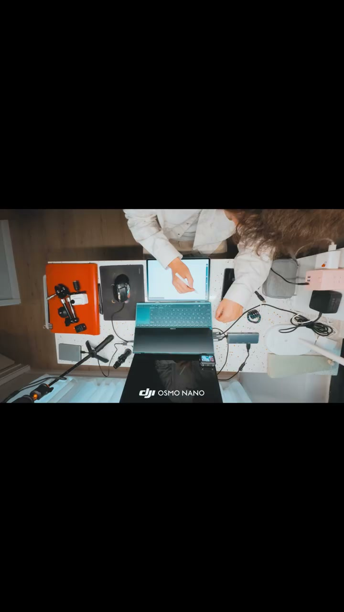
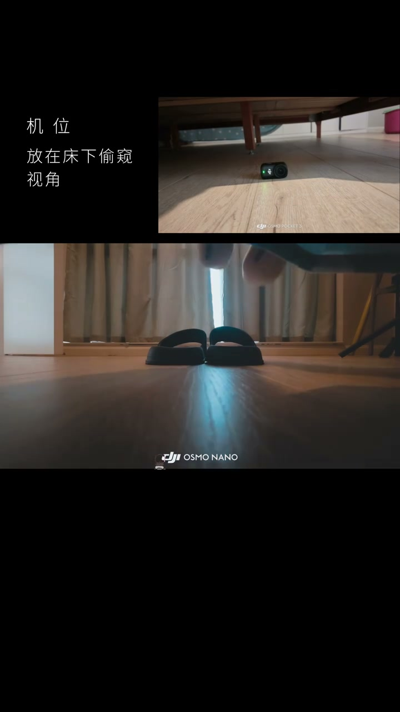
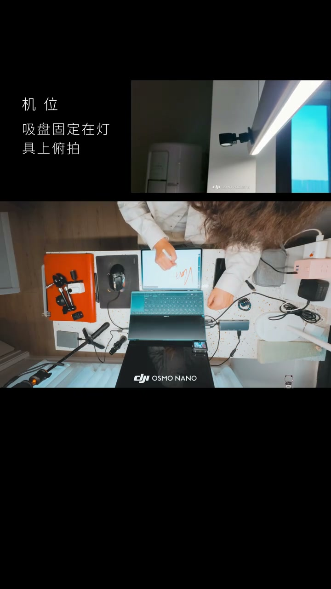

01
中文
起床Vlog的核心难点，是一个人如何拍自己醒来。
EN
The core difficulty of a morning vlog is filming yourself waking up alone.
表达提示film yourself（拍自己）

Scene English · Vlog · 单人拍摄
Solo Camera + Script: Shoot a Morning Vlog with Nano
🎧 语音讲解
The Core Idea of Solo Shooting
情境起床Vlog的难点是一个人如何拍自己醒来，用全景相机或Nano等小型设备预设机位即可。
起床Vlog的核心难点，是一个人如何拍自己醒来。
The core difficulty of a morning vlog is filming yourself waking up alone.
表达提示film yourself（拍自己）
用全景相机或Nano等小型设备，可以预设多个机位。
A 360 camera or a Nano lets you preset multiple angles.
表达提示preset angles（预设机位）
床头、洗手台、厨房，按脚本时间线顺序拍摄，不需要来回跑调机位。
Bedside, sink, kitchen—shoot in script order without running around.
表达提示shoot in order（按顺序拍摄）
关键是提前设想每个环节的画面，前一晚就放好相机。
The key is imagining every shot in advance and placing cameras the night before.
表达提示plan the night before（前一晚计划）
film yourself（拍自己
preset angles（预设机位

Camera Positions and Light
情境全景相机可以放在平时不敢放相机的地方，获得第一人称沉浸感。
全景相机可以放在任何你平时不敢放相机的地方。
The 360 camera can go where you'd never dare put a normal one.
表达提示dare not place（不敢放相机的地方）
获得第一人称的沉浸感。
You get an immersive first-person feel.
表达提示first-person immersion（第一人称沉浸感）
前一晚把相机放在床头，预设好角度，早上醒来直接按录制。
Set the camera on the nightstand the night before, then just hit record when you wake.
表达提示hit record（直接录制）
光线要从窗户过来，不要顶光；洗手台正面利用镜子反射增加层次。
Light should come from the window, not overhead; use the mirror at the sink for layers.
表达提示window light（窗光）
dare not place（不敢放相机的地方
hit record（直接录制

A Script Is the Foundation
情境一个人拍自己最难的不是技术，而是不知道拍什么；前一晚写好脚本按图索骥。
一个人拍自己最难的不是技术，而是不知道拍什么。
The hardest part of solo shooting isn't technique—it's not knowing what to film.
表达提示not knowing what to film（不知道拍什么）
花几分钟在前一晚写好脚本，第二天按图索骥，素材组织效率大幅提升。
Write the script the night before and follow it the next day—footage comes together fast.
表达提示follow the script（按图索骥）
每个环节预设一个固定机位或手持方案。
Preset one fixed position or handheld plan for each step.
表达提示fixed position（固定机位）
后期节奏要紧凑，起床Vlog的理想时长控制在几分钟内，观众耐心有限。
Keep the edit tight—a morning vlog should stay within a few minutes.
表达提示tight edit（紧凑剪辑）
follow the script（按图索骥
fixed position（固定机位

Where This Applies
情境适用于生活类、日常记录、极简风格；手机加支架是零成本替代方案。
适用于生活类、日常记录、极简风格的视频。
It suits lifestyle, daily-record, and minimalist-style videos.
表达提示lifestyle videos（生活类视频）
需要能预设机位的小型设备，手机加支架是零成本替代方案。
You need a small device with preset positions—a phone and tripod is a free alternative.
表达提示phone and tripod（手机加支架）
不要醒来后再想拍什么，也不要拍超过几分钟，观众耐心有限。
Don't improvise after waking, and don't exceed a few minutes—viewers lose patience.
表达提示viewer patience（观众耐心）
lifestyle videos（生活类视频
phone and tripod（手机加支架
说单人难点
说预设机位
说前一晚准备
说光线方向
说紧凑节奏
醒来才想拍什么就晚了。
机位要预设好。
光线要来自窗户。
节奏紧凑勿拖沓。
手机支架零成本。